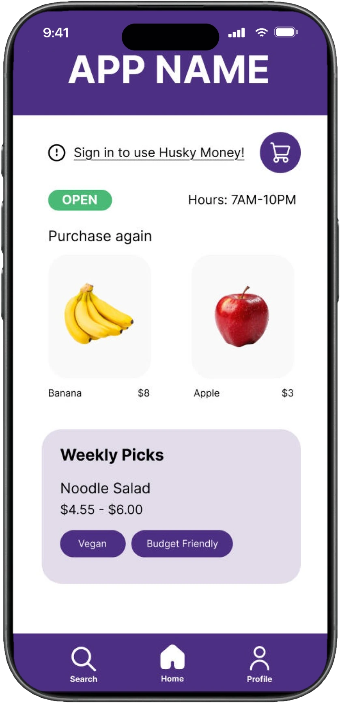

District Market
A grocery ordering and delivery concept designed for University of Washington students.
Context
What is the District Market?
How can I improve the on-campus experience for University of Washington students? As a tired, overwhelmed, and hungry student, the answer was easy: A grocery order and delivery website! District Market is a website for UW students to easily order groceries from either campus District Market locations. Originally designed as a mobile-first website, it allows for students to place orders for pick up or delivery, favorite frequently purchased items, and track current and past orders.
Inspired by a group project in which the original mobile prototype of the District Market website was created, I created a desktop version, polishing my Figma skills in the process. The final interactive prototype is now published and available for users.
Context
Mobile design
One of the main focuses of this project was to create a more detailed, easily usable, and visually appealing version of the mobile app. Through deliberate website design such as use of color, button sizing and product placement, I enhanced the user experience while browsing and purchasing items.

Iteration
Recent Updates
The current District Market prototype is actually the second published prototype of the desktop version. The original, is a similar, less polished attempt.


The biggest changes between the two versions are the noticeable stylistic changes. Shifting away from the original app design which is evident in the first desktop version, the second prototype follows a more direct color theme of dark purple and large white spaces. The menu at the top also looks noticeably different with the newer version saving less space for the title and placing more emphasis on each menu option.


Outcome
My thoughts
This project was created as a challenge I set myself to enhance and improve a prototype I had built as a group. It is my first solo project on Figma, one that, after hours of work, made me extremely comfortable working with the tool.
After creating the second prototype, I am extremely proud of how the website turned out, especially now that both prototypes have active users. I intend to keep updating and improving this project, and plan to eventually bring this prototype to life as a fully functional website.